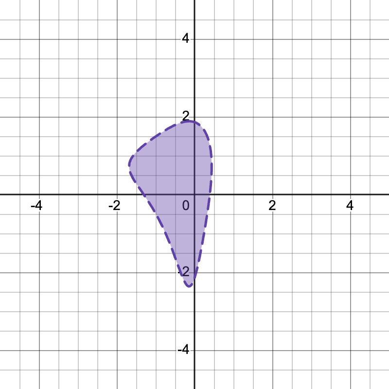
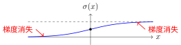
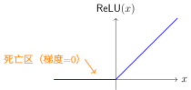
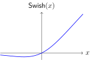
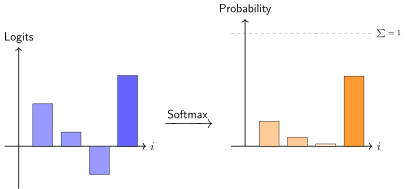

激活函数#
激活函数的本质：划分特征空间#
从线性回归到逻辑回归#
你可能熟悉线性回归：\(y = wx + b\)，它用一条直线拟合数据，输出连续值。但很多时候我们需要做分类——不是预测数值，而是判断"这是A类还是B类"。
问题：如果用线性回归做二分类会怎样？
假设我们想区分"垃圾邮件"和"正常邮件"。如果用线性回归输出 \(y = wx + b\)，我们得到一个实数值。但分类需要的是一个概率——“这封邮件是垃圾邮件的可能性有多大”。
逻辑回归解决了这个问题。它在线性回归的输出上叠加一个 Sigmoid 函数：
Sigmoid 将任意实数压缩到 \((0, 1)\) 区间，恰好可以解释为概率。
逻辑回归的决策规则：
如果 \(\sigma(wx + b) \geq 0.5\)，预测为类别1
如果 \(\sigma(wx + b) < 0.5\)，预测为类别0
这等价于判断 \(wx + b \geq 0\) 还是 \(wx + b < 0\)——在特征空间中，就是用一条直线（或超平面）划分两个区域。逻辑回归只能学习线性决策边界。
为什么需要激活函数#
逻辑回归解决了二分类问题，但它有一个根本限制：只能学习线性边界。现实中很多分类问题的决策边界是复杂的非线性形状——比如异或（XOR）问题，逻辑回归就无法解决。
多层感知机（MLP） 突破了这个限制：
第一层：多个神经元并行，各自学习不同的线性边界
激活函数：引入非线性，将空间"折叠"
后续层：组合这些折叠后的特征，学习复杂边界
什么是"空间"？#
在深度学习中，空间指的是输入数据的特征空间：
一个样本对应空间中的一个点
每个特征对应一个坐标轴
MNIST 图像（784维）就是784维空间中的点
神经网络的每一层都在变换这个空间：
线性变换（\(Wx + b\)）：旋转、缩放、平移
非线性激活：将空间"折叠"，使线性不可分的数据变得可分
决策边界的形成#
没有激活函数，无论堆叠多少层，网络只能学习线性变换——因为多个线性变换的组合仍然是线性的：\(f(W_2(W_1x)) = W_2W_1x = W'x\)。激活函数引入非线性，使网络能够在空间中划分复杂的决策边界。
{kind=link}

3神经元网络形成的复杂决策边界#
网络结构解析：
这个网络只有 3 个隐藏层神经元，却能形成如此复杂的决策边界。让我们逐层解析：
数学表达式：
基础激活函数：
Swish: 平滑的 ReLU 变体
Sigmoid: 将值压缩到 0-1
隐藏层神经元（3 个独立的线性变换 + Swish）：
输出决策边界：
为什么能形成复杂形状？
每个Swish神经元定义一个"软"半平面：
\(n_1 = r(2x-1)\)：当 \(2x-1 > 0\)（即 \(x > 0.5\)）时显著激活
\(n_3 = r(y-2)\)：当 \(y > 2\) 时显著激活
注意 Swish 不是简单的 0/1 开关，而是平滑过渡
特征组合 \(n_1 + n_3\)：
将两个方向的激活"叠加"
在 \(x > 0.5\) 且 \(y > 2\) 的区域最强
门控机制 \(n_2 \times (\dots)\)：
\(n_2\) 充当"开关"，控制哪些区域可以输出
当 \(n_2\) 很小时，无论 \((n_1+n_3)\) 多大，输出都接近0
Sigmoid最终决策：
将连续值转换为概率式判断
\(>0.5\) 判定为类别A（紫色区域）
直观理解：这个网络像是在空间中"雕刻"——先用 \(n_1, n_3\) 定义一个粗略的区域，再用 \(n_2\) 进行精细修剪，最终得到不规则的形状。
交互式探索：Desmos（可以拖动滑块调整参数，观察形状变化）
核心洞察：
从这个3神经元的例子，我们可以看到神经网络划分决策边界的关键机制：
每个神经元定义一个"软"边界：
Swish 激活将线性边界 \(wx + b = 0\) 变成平滑的过渡区域
不同于 ReLU 的硬开关，Swish 提供渐变的激活强度
这允许网络学习更平滑、更复杂的边界
非线性组合创造复杂性：
乘法操作 \(n_2 \times (n_1 + n_3)\) 是关键
没有激活函数的非线性，这样的组合无法实现
这展示了非线性激活的本质作用：让简单线性边界的组合产生复杂形状
"门控"与"特征"的配合：
\(n_1, n_3\) 提供基础特征（对x和y的响应）
\(n_2\) 充当门控，决定哪些区域可以"通过"
这种配合模式在深层网络中反复出现
少量神经元就能实现复杂分类：
仅需3个神经元就能形成非凸、非线性的决策区域
这说明神经网络的表达能力来自非线性组合，而非单纯增加神经元数量
深度（多层非线性组合）比宽度（单层神经元数量）更重要
关键结论：非线性激活函数让神经网络能够将简单的线性决策边界组合、变换、叠加成任意复杂的形状。没有非线性激活，无论多少层都只能学习线性分类器：\(f(W_2(W_1x)) = W_2W_1x = W'x\)。
Sigmoid 函数#
Sigmoid 将任意实数映射到\((0,1)\)，提供平滑的非线性变换：
导数：\(\sigma'(x) = \sigma(x)(1 - \sigma(x))\)，在\(x=0\)处最大值为\(0.25\)。这个导数形式在反向传播算法中非常重要。
优点：
输出可解释为概率
平滑可导
局限性：
梯度消失：\(|x|\)较大时梯度接近0，这会导致反向传播算法时梯度衰减
非零中心：输出始终为正

Sigmoid 函数
Tanh函数（双曲正切）#
Tanh 是 Sigmoid 的"零中心"版本：
导数：\(\tanh'(x) = 1 - \tanh^2(x)\)，在\(x=0\)处最大值为\(1\)
相比 Sigmoid 的优势：
零中心输出（-1到1）
更强梯度信号（最大梯度是 Sigmoid 的4倍）
局限：仍然存在梯度消失问题

Tanh函数
ReLU 函数（Rectified Linear Unit）#
ReLU [NH10] 于2012年 AlexNet 的成功后成为主流：
导数：\(\text{ReLU}'(x) = \begin{cases} 1 & x > 0 \\ 0 & x < 0 \end{cases}\)
核心优势：
解决梯度消失：正区间梯度恒为 1
计算高效：仅需比较操作
稀疏激活：约 50% 神经元输出为 0
问题：“死亡神经元”——若输入始终为负，梯度永远为 0，神经元永久失活

ReLU 函数
Leaky ReLU 与变体#
为解决死亡神经元问题，Leaky ReLU 给负区间一个小斜率：
其中 \(\alpha\) 通常取 0.01。
优势：
负区间有非零梯度，防止神经元死亡
保持 ReLU 的计算效率
进阶变体：
PReLU：\(\alpha\) 作为可学习参数
ELU：负区间使用指数函数，更平滑

Leaky ReLU函数
Swish 函数#
由 Google Brain 团队的 Prajit Ramachandran 等人于 2017 年通过神经架构搜索发现 [RZL17]。其设计动机体现了深度学习研究的新趋势：通过自动化方法发现新的激活函数
其中 \(\beta\) 是可选的可学习参数（通常取 1.0）。
性质：
自门控机制：Swish 将输入 \(x\) 作为"门"，将 \(\sigma(\beta x)\) 作为"门控信号"，实现 \(x\) 与 \(\sigma(\beta x)\) 的逐元素相乘
平滑非单调：与 ReLU 不同，Swish 是非单调的，在负区间有小的负值
可学习参数：\(\beta\) 可以设置为可学习的参数，让网络自动调整门控强度
实验验证：通过大规模实验验证，Swish 在多个任务上优于 ReLU
与ReLU的关系
当 \(\beta \to \infty\) 时，\(\sigma(\beta x) \to \text{step}(x)\)，Swish 趋近于 ReLU：

Swish 函数
Softmax 函数#
Softmax 是多分类问题的标准输出层激活函数，将 logits 转换为概率分布：
关键性质：
输出和为 1，可解释为概率
指数放大差异：高分更高，低分更低
类别之间应该是"竞争"的，一个类别的概率增加意味着其他类别概率降低
与交叉熵损失配合：
梯度形式简洁：\(\frac{\partial L}{\partial x_i} = \text{softmax}(x_i) - y_i\)

Softmax 变换示意
激活函数选择指南#
场景 |
推荐选择 |
理由 |
注意事项 |
|---|---|---|---|
隐藏层（默认） |
ReLU |
计算快、梯度好 |
注意学习率，避免死亡神经元 |
隐藏层（深度网络） |
Leaky ReLU / ELU / Swish |
避免梯度消失和死亡神经元 |
ELU 和 Swish 计算稍慢 |
二分类输出 |
Sigmoid |
输出为概率 |
不适用于隐藏层 |
多分类输出 |
Softmax |
输出概率分布 |
配合交叉熵损失 |
总结#
激活函数是神经网络非线性表达能力的来源：
几何视角：每个激活函数定义了输入空间的划分方式
梯度视角：激活函数的导数决定了反向传播时的梯度流动
实践视角：
ReLU是隐藏层的默认选择
Softmax是多分类输出的标准选择
梯度消失问题推动了ReLU及其变体的发展
理解激活函数如何引入非线性后，我们将探讨损失函数——如何量化模型预测的好坏，将训练转化为可通过梯度下降与优化算法求解的优化问题。
参考文献#
Vinod Nair and Geoffrey E Hinton. Rectified linear units improve restricted boltzmann machines. In Proceedings of the 27th International Conference on Machine Learning, 807–814. 2010.
Prajit Ramachandran, Barret Zoph, and Quoc V Le. Swish: a self-gated activation function. arXiv preprint arXiv:1710.05941, 2017.
贡献者与修订历史
查看详细修订记录
-
f159d562026-05-08 - Heyan Zhu: fix: address complaints from the linter -
42a2ebc2026-05-02 - Heyan Zhu: feat(docs): add inception and resnet modules with related content -
b55c3842026-05-01 - Heyan Zhu: docs: fix document cross-references and add anchor tags -
4f5009f2026-04-28 - Heyan Zhu: docs: add detailed explanations for neural network concepts -
59126f42026-04-26 - Heyan Zhu: docs(math-fundamentals): update content structure and add citations -
ae2053f2026-04-26 - Heyan Zhu: docs(math-fundamentals): add task-formulations and update related content -
756a7932026-04-25 - Heyan Zhu: docs(math-fundamentals): update content structure and improve explanations -
dcecce42026-01-26 - Heyan Zhu: docs: enrich math fundamentals documentation with code captions and TikZ visualizations -
0c291d72025-12-10 - Heyan Zhu: docs: restructure course materials and add new content